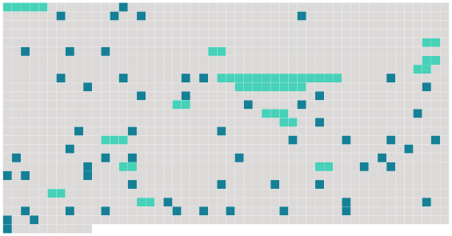

Longueur nb maillons : 75 mentions |
 |
[Une vieille femme en tablier] traversait la chaussée d'un pas tranquille ; [elle] se trouvait juste sur le chemin d'Hector, qui arrivait à fond de train. [4 phrases]
» [7 phrases]
»
[Elle] semblait morte, avec [sa] figure jaune et [son] bonnet de travers, tout gris de poussière. « Portez [cette femme] chez un pharmacien, commanda le vieux monsieur, et allons chez le commissaire de police. [4 phrases] Il expliqua qu'il allait rentrer, qu'il avait renversé [une femme] , que ce n'était rien. [2 phrases] Il donna son nom, Hector de Gribelin, attaché au ministère de la Marine ; et on attendit des nouvelles de [la blessée] [1 phrases] [Elle] avait, repris connaissance, mais [elle] souffrait effroyablement en dedans, disait [-elle]
[C'] était [une femme de ménage, âgée de soixante-cinq ans, et dénommée Mme Simon] Quand il sut qu' [elle] n'était pas morte, Hector reprit espoir et promit de subvenir aux frais de [sa] guérison. [1 phrases] Une cohue stationnait devant la porte ; [la bonne femme, affaissée dans un fauteuil] , geignait, les mains inertes, la face abrutie. Deux médecins [l'] examinaient encore. [1 phrases]
Hector [lui] parla : [3 phrases] --C'est comme un feu que [j'] aurais dans les estomacs. [2 phrases] --Il faudrait envoyer [cette femme] dans une maison de santé ; [j'] en connais une où on [la] recevrait à six francs par jour. [3 phrases] « Ce n'est rien, [cette dame Simon] va déjà mieux, dans trois jours il n'y paraîtra plus ; je [l'] ai envoyée dans une maison de santé ; ce n'est rien. [1 phrases] En sortant de son bureau, le lendemain, il alla prendre des nouvelles de [Mme Simon]
Il [l'] a trouva en train de manger un bouillon gras d'un air satisfait. [2 phrases]
[Elle] répondit : [Je] me sens quasiment anéantie. [3 phrases]
[La vieille femme] , le teint clair, l'oeil limpide, se mit à geindre en l'apercevant : [J'] en ai pour jusqu'à la fin de [mes] jours. [3 phrases] [Elle] hurle quand on essaye de [la] soulever. On ne peut même changer de place [son] fauteuil sans [lui] faire pousser des cris déchirants. Je dois croire ce qu' [elle] me dix, monsieur ; je ne suis pas dedans. Tant que je ne [l'] aurai pas vue marcher, je n'ai pas le droit de supposer un mensonge de [sa] part.
» [1 phrases] [Mme Simon] ne quittait pas [son] fauteuil.
[Elle] mangeait du matin au soir, [engraissait] , [causait] gaiement avec les autres malades, [semblait] accoutumée à l'immobilité comme si c'eût été le repos bien gagné par ses cinquante ans d'escaliers montés et descendus, de matelas retournés, de charbon porté d'étage en étage, de coups de balai et de coups de brosse.
Hector éperdu venait chaque jour ; chaque jour il [la] trouvait tranquille et sereine, et déclarant :
» [3 phrases] Alors Hector assembla quatre grands médecins qui se réunirent autour de [la vieille]
[Elle] se laissa examiner, tâter, palper, en les guettant d'un oeil malin. « Il faut [la] faire marcher, dit l'un.
»
» [1 phrases]
Et, quand Hector apporta cette nouvelle à sa femme, elle se laissa choir sur une chaise en balbutiant : |
 |
La ressource peut être téléchargée sur la page Ortolang
Si vous avez des questions ou vous voyez des erreurs, merci d'envoyer un mail à silvia.federzoni89@gmail.com
Site développé par S. Federzoni (contact)